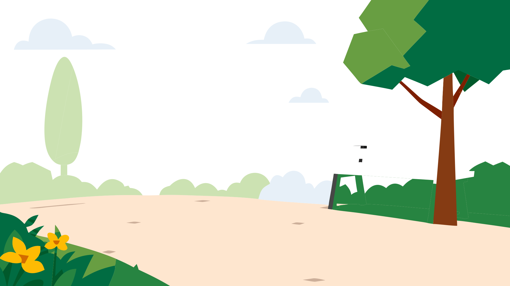

Protection explorer
Get started! Explore these 3 protection needs to get a complete protection analysis.
Move your mouse left and right to explore

Get started! Explore these 3 protection needs to get a complete protection analysis.
Move your mouse left and right to explore